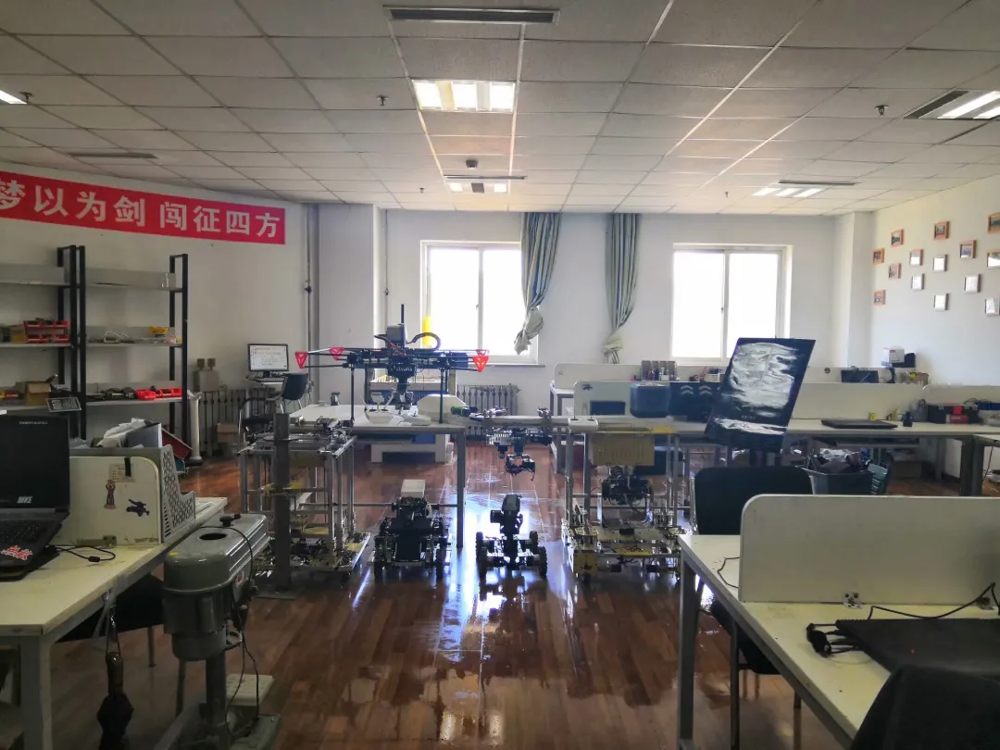
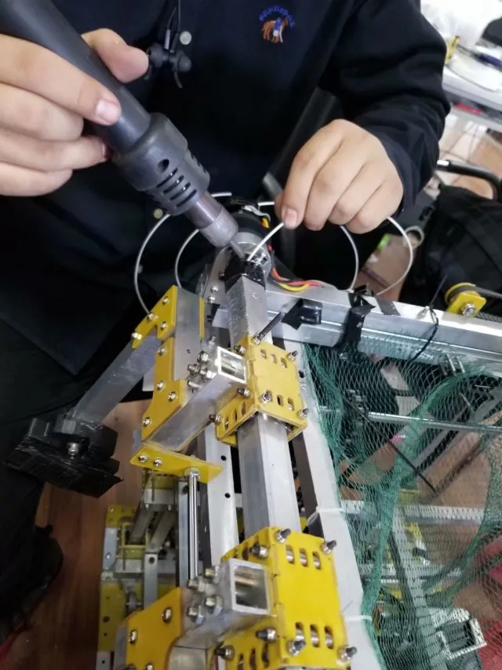
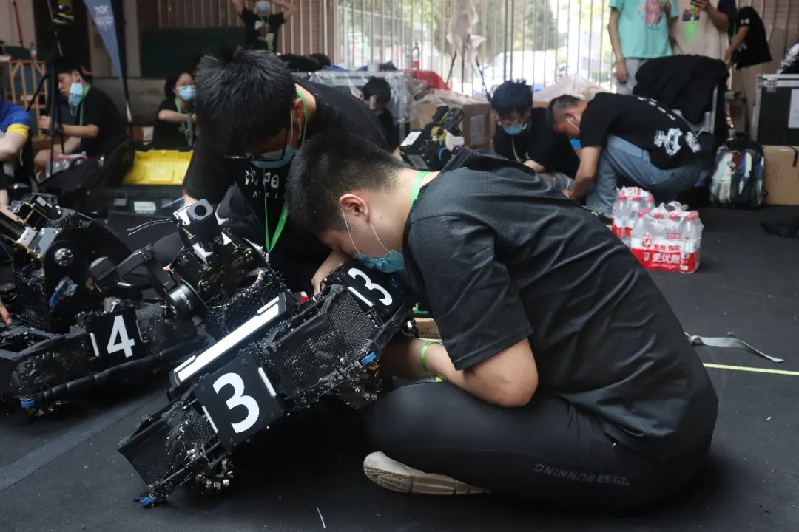

且看他运筹帷幄之中

心之所向，必有回响
所有的付出都有来自回报的犒劳
本期来自战队当中一位步兵操作手
话不多说
走起
我们的高老板最开始进战队是18年9月份，做完省赛之后进入了Ambition战队，当时最初是在队里负责与电控相关的工作，由于前期赶进度，后来队里有两个电控已经够用了，就转去硬件帮忙了。（“精准跳槽”--赶往最需要的岗位）。
下一：漏雨过后，一波操作，焕然一新的实验室。没错，这就是日常状态，嗯。
高总：平时在电协做点自己喜欢做的事情，学学某方面的技术，用现成的机器人调试练习一下，涨涨经验，画板子做点小玩具，写写代码(bug)啥的，和机械的视觉的也合作做一些东西，总之蛮有意思的。
下二：祖传高氏手工打印法，这次咱们就不用热熔胶了，用打印料。


面对强敌，赛前状态和装备当然需要调整到最佳状态，万事俱备，只欠超常发挥。

高老板：看到新哨兵第一次跑的很快，对它的防御能力充满信心的高兴，新步兵做出来测试的时候表现都很好，再有训练的时候反陀螺击打装甲板准确度到了60以上等等。
总之大家在一起的每一天都很难忘，一起检查小车，一边测试性能，总结经验，归结战术，大家一起成长，进步。
高总：就祝大家学有所成吧，选择了自己要走的道路就坚持下去。
排版 | 王聚宝
图片 | 信息部